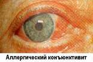
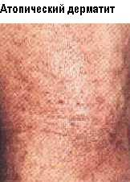
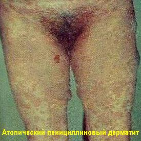

Разнообразие анафилактических реакций.
Анафилаксия может проявляться в виде местной реакции (на коже и слизистых), причём, в соответствии с локализацией, может обнаруживаться крапивница, вазомоторный ринит, атопическая бронхиальная астма, желудочно-кишечные расстройства, отек Квинке и пр. Анафилаксия может проявляться и в виде системной реакции - анафилактического шока.

Поллиноз или аллергия к пыльце растений, то есть, их мужским половым клеткам, является одной из наиболее распространенных атопий (в Европе она наблюдается у 0.4 - 2%, а в США - у 5-10% населения). Клиническую картину составляют, прежде всего, реакции слизистых верхних дыхательных путей (сенной насморк) и конъюнктивы. Эти расстройства можно рассматривать, как предастматические, поскольку, со временем, приблизительно у 20% больных развивается бронхиальная астма (атопического характера). В единичных случаях реакция протекает с повышением температуры тела (сенная лихорадка). Как правило, процесс осложняется атопическим синуситом, евстахиитом и часто - серозным отитом. Кроме чихания и серозного отделяемого из носа, богатого эозинофилами, весьма демонстративным косвенным симптомом служит появление стойкого периорбитального цианоза (“мешки под глазами”).Более редкими проявлениями пыльцевой аллергии или поллиноза являются дерматиты, нарушения ЖКТ, ревматоидные заболевания.
Среди аллергенов в Средней Европе на первом месте - злаковые (тимофеевка, ёжа, овсяница, райграсс, лисохвост, пырей), в районе Средиземноморья - постенница, в Северной Америке лидируют амброзиевые (например, крестовник). Впрочем, и в России - Краснодарском и Ставропольском крае, на Северном Кавказе этот карантинный сорняк американского происхождения широко распространён. Поллинозы вызываются не любой пыльцой. За два года в больнице Св.Марии (Лондон) по поводу аллергии к пыльце трав лечилось 3 тыс. пациентов, но ни один из них (!) не имел аллергии к пыльце крапивы или подорожника. В то же время, А.Д.Адо сообщает о наличии аллергии к злакам, чаще всего, тимофеевке - у 68 из 72 обследованных пациентов с поллинозом (1975). Вероятно, аллергогенность, в значительной степени, определяется до конца неизвестными свойствами аллергенов. Любопытно, что у некоторых аллергенных растений, гельминтов шистосомул и аллергенов домашних клещей выявлены перекрестно реагирующие эпитопы.



Если приступы анафилаксии не имеют отчётливой сезонности, либо преобладают в холодный сезон, когда нет пыльцевых аэроантигенов, а пациент проводит больше времени дома, уместно предположить, что наблюдается аллергия к домашней пыли. Некоторые больные "круглогодичными ринитами", которые иногда переходят в астму, аллергичны к домашним животным и птицам (шерсть кошек и собак, перья канареек), членистоногим (дафнии и сухой корм из ракообразных для рыбок и других животных, моль, домашние тараканы и их экскременты - особенно много свидетельств против американского таракана, к родному пруссаку население Старого Света, в целом, куда более толерантно). В США часто регистрируется аллергия на антигены ручейников и подёнок. В клинике глазных болезней известен упорный и тяжёлый аллергический блефарит, вызванный у предрасположенных к анафилаксии пациентов микроскопическим клещом-кератофагом домашних животных и человека угрицей железистой (Demodex) - демодекоз.
Однако, эти членистоногие, всё же, провоцируют атопию сравнительно редко.
Наиболее часто, как это впервые установил голландский учёный Р.Вурхорст (1966), источником домашних аллергенов является мелкий клещ семейства Dermatofagoides, который живет в домашней пыли, и кормится, как это и следует из его названия, чешуйками эпидермиса и покровов животных. Очень часто вышеназванные домашние антигены животного происхождения вызывают аллергию не сами, а за счёт предоставления клещу питательной среды. Это же можно сказать и о “мучной астме”, при которой анафилаксию провоцируют амбарные клещи, а не сама мука.
 В Старом Свете преобладает D.pteronyssinus, в Америке - D.farinae. Клещ домашней пыли часто встречается в пыли матрацев, ковров, подушек. Те, у кого сиптоматика развивается во время сна на перовой подушке, порой думают, что они аллергичны к перу (но, в большей степени, они обязаны своими симптомами микрофауне, обитающей в перьях). Аллергия к книжной пыли также связана с продуктами жизнедеятельности мельчайших членистоногих, обитающих в корешках старых книг. Особенно аллергенны экскременты клеща Dermatofagoides, cодержащие концентрат его основного Р-антигена и способные к глубокому проникновению в дыхательные пути из-за своей мелкодисперсности. Сам клещ туда не попадает. Любопытно и практически важно, что клещ устойчив к инсектицидам. Только холод (вымораживание) тормозит его жизнедеятельность. В этой связи, вспомним добром распространенную русскую традицию зимой чистить ковры и дорожки снегом.
В Старом Свете преобладает D.pteronyssinus, в Америке - D.farinae. Клещ домашней пыли часто встречается в пыли матрацев, ковров, подушек. Те, у кого сиптоматика развивается во время сна на перовой подушке, порой думают, что они аллергичны к перу (но, в большей степени, они обязаны своими симптомами микрофауне, обитающей в перьях). Аллергия к книжной пыли также связана с продуктами жизнедеятельности мельчайших членистоногих, обитающих в корешках старых книг. Особенно аллергенны экскременты клеща Dermatofagoides, cодержащие концентрат его основного Р-антигена и способные к глубокому проникновению в дыхательные пути из-за своей мелкодисперсности. Сам клещ туда не попадает. Любопытно и практически важно, что клещ устойчив к инсектицидам. Только холод (вымораживание) тормозит его жизнедеятельность. В этой связи, вспомним добром распространенную русскую традицию зимой чистить ковры и дорожки снегом.
Большое беспкойство способна причинить и пищевая аллергия. Истинную частоту этой разновидности аллергии установить трудно вследствие меньшей очерченности симптомов, чем у сенной лихорадки или астмы, вызываемых воздушными аллергенами. Показателем возможного аллергического ответа может быть быстрое развитие крапивницы или ангионевротического отёка после приема пищи. Но многие симптомы менее очевидны и могут маскироваться рядом других неаллергических нарушений: так, боли в животе и диаррея - наиболее частый результат бактериальной или вирусной инфекции кишечника. Но когда подобные симптомы становятся частыми и хроническими, и при этом не удается обнаружить инфицирующие организмы, следует подумать о других причинах, в частности, аллергическом гастроэнтерите, проявляющемся коликами и водянистым поносом.
Интересным наблюдением пищевой аллергии является описание П. Бюссере (1977) больных, которых в течение 30 лет лечили по поводу язвенного колита комбинацией сульфапиридина и 5-аминосалициловой кислоты (аналог аспирина).
И лишь случайно выяснилось, что этих больных можно столь же успешно лечить одними салицилатами. В это время авторы уже знали, что эффекты аспирина могут быть связаны с его действием на простагландины. Более того, на группе добровольцев было показано, что принятый до еды аспирин позволяет избежать диарреи и колита, неизбежно возникающих после принятия аллергена. Было показано далее, что потребление аллергенной пищи сопровождается повышением уровня простагландинов в кишке и в кровотоке, сопутствуя колиту и диаррее. И секреция простагландинов, и симптоматика предотвращались аспирином или его аналогами. Однако, доказательств, что аллергические реакции другой локализации, кроме кишечной аллергии, могут быть облегчены аспирином или его аналогами нет. Напротив, как было показано выше, возможна аллергоидная имитация анафилактической симптоматики, в частности, бронхоспазма, при непереносимости салицилатов. Пищевая аллергия может поражать и органы, не относящиеся к ЖКТ. Описаны аллергические отиты и конъюнктивиты в ответ на аллергены рыбы и мяса.
Следует отметить, что пищевая аллергия может иметь и неанафилактические механизмы - иммунокомплексные, цитотоксические и типа ГЗТ. Пищевая перекрёстная сенсибилизация альбумином коровьего молока может вызывать в катамнезе аутоиммунные цитотоксические реакции против поверхностных антигенов b-клеток островков Лангерганса и ювенильный сахарный диабет.
Палитра анафилактической аллергии весьма широка. Встречаются анафилактические реагин-зависимые формы мигрени и стенокардии, связанные с аллергической активацией тромбоксан-лейкотриеновых вазоконстрикторных и тромбогенных механизмов.
Отметим, что анафилаксия - это аллергия, преимущественно, к чужеродным антигенам. Описан всего один случай периодической крапивницы у пациентки, механизм которой оказался связан с аутоанафилаксией против собственного прогестин-связывающего белка.
Для диагностики анафилактических реакций применяются накожные волдырные пробы с антигенами, прямая реакция Шелли - дегрануляция реагин-сенсибилизированных мастоцитов в присутствии аллергена, а также основанные на конкурентном иммуноферментном или радиоиммунолоическом принципе радиоиммуносорбентный тест (определение общего IgE) и радиоаллергосорбентный тест (определение специфических, по отношению к избранному аллергену, IgE).
|
|
|
|
|
|